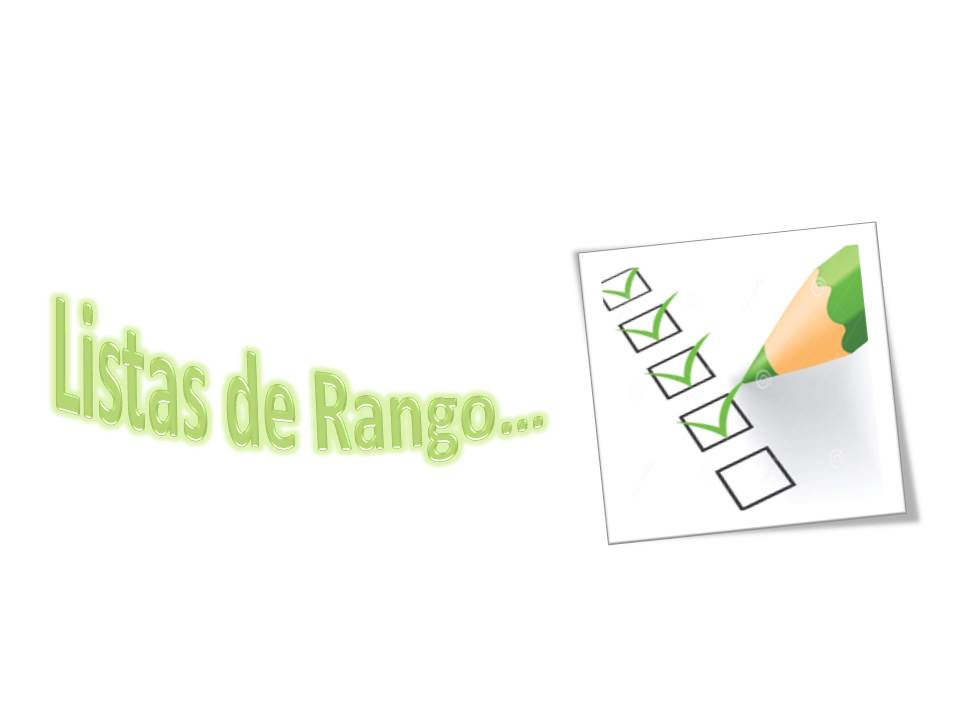

Listas de rango
¿Qué és una lista de rango?

Sustento Pedagógico.
La observación es una
técnica de evaluación utilizada para describir e interpretar de manera holística
el comportamiento de un alumno, es decir, pueden evaluarse en forma integral,
aspectos del proceso de aprendizaje y resultados del mismo referentes a
conocimientos, habilidades, actitudes y valores en diferentes situaciones. Por
tal razón, se utiliza con más frecuencia en la evaluación de contenidos de tipo
procedimental y actitudinal.
Las actitudes pueden inferirse a partir de las respuestas
de los sujetos ante un objeto, persona o situación. Las respuestas pueden ser
verbales o comportamientos manifiestos. El lenguaje y las acciones manifiestas
son las herramientas con que se cuenta para poder acceder a las actitudes de
los demás y evaluarlas. La observación
nos permite obtener datos que pueden registrarse en situaciones naturales o en
situaciones intencionalmente diseñadas (con ciertos criterios determinados
anticipadamente) para observar lo que
quiere observarse.
Para indicar el grado en el cual está presente una
determinada característica que va a observarse, se utilizan las escalas o listas de rango. A
diferencia de las listas de cotejo. Las listas de rango ofrecen una evaluación más
detallada sobre el objetivo de la observación. En las listas de cotejo sólo se
evalúa la presencia o ausencia de una actitud, habilidad o conocimiento,
mientras que en las listas de rango se puede especificar el grado en que la
actitud, habilidad o conocimientos están presentes.